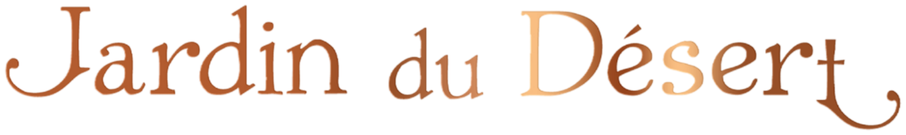

From space. To skin. Beyond the stay.
Jardin du Désert creates the personal layer guests carry beyond the stay.
From the property's identity to a private guest relationship that continues after checkout.
Jardin du Désert translates the property's State from space to skin —and into a private relationship beyond checkout.
Space → Skin → Private Access

A State guests, teams and press can name.
A private experience designed for the individual guest.
A portable ritual guests can carry and personally repeat.
Access to future rituals, property events and community.
Emotional connection and identity are increasingly shaping luxury desirability.
Travelers increasingly seek experiences tailored to what they value, from privacy and longer stays to the details of their time at a property.
Odor-evoked autobiographical memories can be more emotional and evocative than memories triggered visually or auditorily.
Research into luxury hotel membership programs links a member’s sense of collective identity with commitment to the hotel brand, resistance to switching and word of mouth.
The destination is no longer the only starting point. Travelers increasingly begin with a desired emotional outcome — to rest, reconnect or experience something meaningful.
Selected across independent properties and hospitality groups.
Each must express a recognizable Statethrough its style, programs, events and values.
This is not an ambient scenting partnership. Guests experience your property through five senses: sight, sound, touch, taste and scent. We use scent’s close connection to emotion and memory to physically anchor your State through a personal ritual.
Your existing scent remains. We can draw on its recognizable notes to create a personal oil. The product belongs in your property’s retail, under your control.
Every property already communicates a State. We discuss what yours stands for, how you want guests to feel, and what you want them to remember. Together, we define it.
Minimal. The scent is placed in-room. The ritual is a short, trainable moment. The private guest layer is operated by Jardin du Désert on your behalf.
Your code opens the guest’s private Space. They can revisit their intention, receive reminders, practice rituals, and see events and a community connected to your property.
A scented ceramic stone beneath a glass cloche introduces the State without opening the bottle. The guest writes an intention on the complimentary infused card and keeps it with its private access code. The sealed perfume oil follows the minibar model: if opened, it is charged to the room.
Through a 6 ml alcohol-free perfume oil applied directly to the skin—not dispersed through a shared space. It can be worn alone or layered with any fragrance.
The property tracks cards taken and perfume oils purchased. We track code activations, continued platform use and event interest. Property recall and repeat stays are evaluated over time.
Express your interest in becoming one of the Twenty-Two.Express your interest in becoming one
of the Twenty-Two.